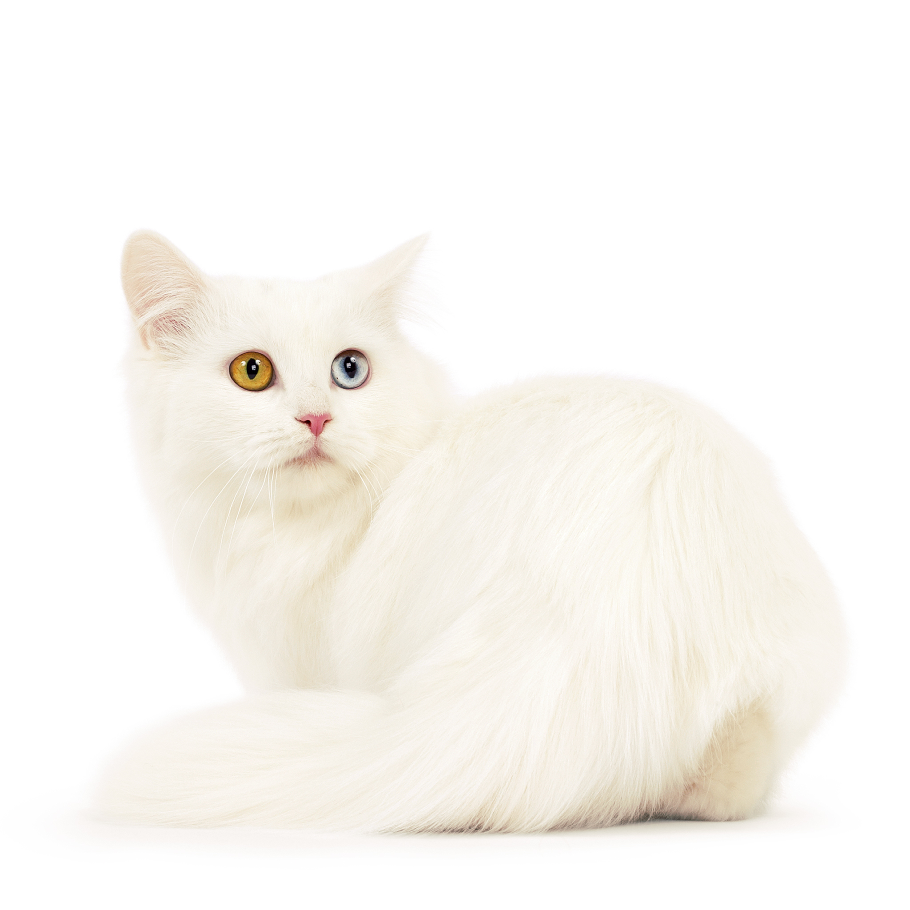

Манчкин
Характеристика
| Образ жизни | В помещении |
| Тип шерсти | Короткошерстная |
| Размер | Средний |
| Образ жизни | В помещении |
| Тип шерсти | Короткошерстная |
| Размер | Средний |
Манчкин — кошка от малого до среднего размера. Ее сложение гармонично, хвост равен туловищу по длине. Уникальная и самая примечательная особенность манчкина — короткие лапы. Глаза миндалевидной формы и высоко поставленные уши придают морде настороженное и в то же время открытое выражение. Шерсть согревает этих кошек в холодную погоду и не дает перегреваться в жару. У короткошерстной разновидности текстура шерсти полуплюшевая. У полудлинношерстной — шелковистая шерсть, небольшой воротник на шее и пышно опушенный хвост.
Эти кошки общительны и чрезвычайно игривы. Они любят бегать, преследовать добычу и играть с игрушками. Хорошо чувствуют себя в компании, в том числе с детьми, собаками и другими кошками. Манчкин – порода кошек, которая обладает необыкновенно любознательным и живым характером. Взобраться с пола наверх одним прыжком они не могут, но им хватает ловкости и сообразительности, чтобы взять высоту в несколько этапов.
Коротконогие кошки появлялись в различных странах и в разные времена. Целая линия таких кошек возникла в Великобритании в 1944 году, но после Второй Мировой войны она была утрачена. Похожие кошки встречались также России и в различных областях США. История манчкинов началась в 1983 году, когда Сандра Хоккендел нашла беременную коротконогую кошку. Именно она положила начало новой породе. Порода манчкин сформировалась в результате вязки этой кошки с одним из котов из ее же помета и последующих скрещиваний их потомства с другими домашними кошками. С 1994 года развитие породы продолжалось под наблюдением международной ассоциации TICA. В 2003 году порода манчкин получила право соревноваться в классе «Чемпионат».